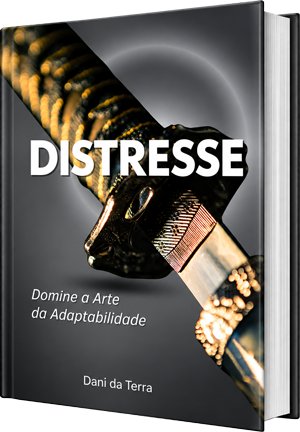

Primeiro, entender você
O processo começa com uma avaliação detalhada do seu histórico de saúde física e psicoemocional.
Antes de decidir se este acompanhamento faz sentido para você, conheça a proposta da Dani e entenda como uma abordagem integrativa e humanista pode ajudar a organizar os próximos passos da sua jornada.
A proposta da Dani também é apresentada em seu livro, que traduz para uma linguagem acessível a relação entre corpo, mente, estresse e adaptabilidade. A ideia central destacada na página atual é que o desafio não está simplesmente no estresse, mas em saber o que fazer com ele.

O processo começa com uma avaliação detalhada do seu histórico de saúde física e psicoemocional.
A partir dessa compreensão, é estruturado um plano de encontros direcionado aos seus objetivos e à sua realidade.
Corpo, mente, hábitos e contexto são considerados de forma integrada, com uma abordagem humanista e individualizada.
Olá! Sou Dani, especialista em saúde integrativa, com 16 anos de prática clínica. Ajudo você a cuidar da saúde física e emocional, reduzir o estresse e a ansiedade, superar o esgotamento e recuperar sua energia e bem-estar por meio de uma abordagem que integra mente, corpo e emoções.
Sua transformação pode começar com uma leitura! Meu livro é um convite para olhar para si com mais atenção e dar o primeiro passo rumo a uma vida com mais equilíbrio e bem-estar.
Quero adquirir o livro agora